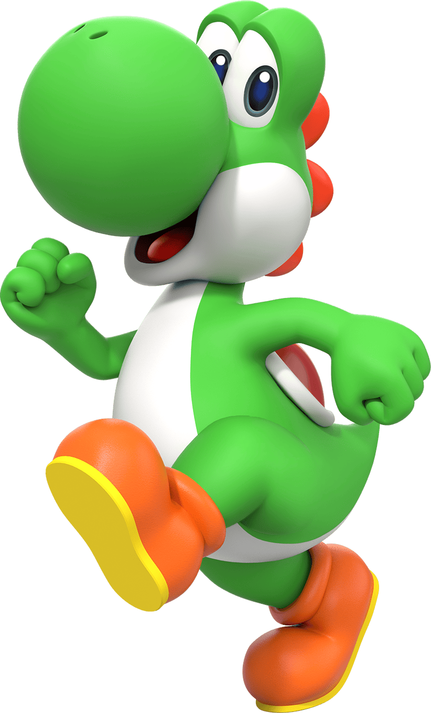

Yoshi

- Yoshi é um grande parceiro e amigo de Mario e Luigi, acompanhando-os em muitas das aventuras deles.
- É um dinossauro verde fofo, gentil, generoso, corajoso, compassivo, brincalhão e às vezes infantil.
- Apesar de não falar muitas palavras, apenas seu próprio nome, possui várias habilidades que ajudam ele e seus amigos a combaterem os vilões.
- Seu Flutter Jump faz com que ele consiga flutuar no ar por um curto período de tempo
- Sua língua grande e pegajosa faz com que consiga comer inimigos a uma distância maior e prendê-los em ovos.
- Nas suas costas, possui uma sela ou concha vermelha que pode ser usada para montar nele.
- Também possui suas próprias aventuras
- New Yoshi's Island: Nessa aventura, uma cegonha estava prestes a entregar um par de gêmeos recém-nascidos, o Baby Mario e o Baby Luigi (Mario e Luigi ainda bebês), aos seus pais, mas acaba passando por uma emboscada de Kamek no caminho e ela, junto com o Baby Luigi, é capturada por Kamek e aprisionada no Castelo do Bowser.
Já o Baby Mario acaba caindo no mar durante o confronto, apenas para se encontrar nas costas de um Yoshi em uma ilha, depois os Yoshis descobrem que o Baby Mario tem um mapa que mostra a localização do Castelo do Bowser. Em seguida, os Yoshis se unem para conseguirem levar o Baby Mario de volta para a companhia do Baby Luigi e depois, serem levados para seus pais com segurança.
- Yoshi's Woolly World: Nessa aventura, Yoshi está comemorando uma festa junto com os outros Yoshis de cores diferentes na Yoshi's Island ou Ilha do Yoshi, quando de repente aparece Kamek, e lança um feitiço sobre os Yoshis, transformando-os em bolas de novelo.
Felizmente, dois Yoshis conseguem escapar e eles vão atrás de Kamek para resgatar seus amigos peludos.
- Yoshi's Crafted World: Nessa aventura, os Yoshis descansam e se divertem em sua ilha, reunidos em torno da Pedra dos Sonhos do Sol ou Sundream Stone, um artefato que se diz possuir o poder de realizar sonhos.
De repente, Kamek e Baby Bowser, chegam à ilha para roubar o artefato depois de ouvirem a lenda sobre seu poder. Quando os Yoshis tentam impedir a pedra de ser roubada, as gemas dela acabam se separando e são jogadas por vários mundos, assim como os Yoshis, o Kamek e o Baby Bowser.
Então, os Yoshis, ainda juntos depois de tentarem impedir o roubo, embarcam em uma jornada para procurar as gemas desaparecidas para dar o poder de volta à Sundream Stone.
Página Anterior